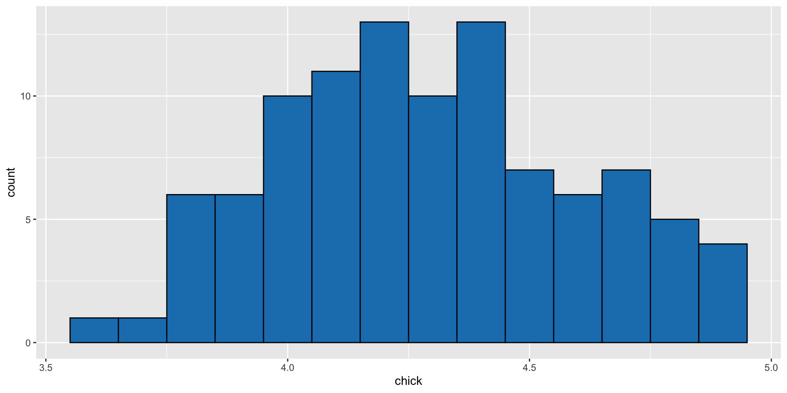
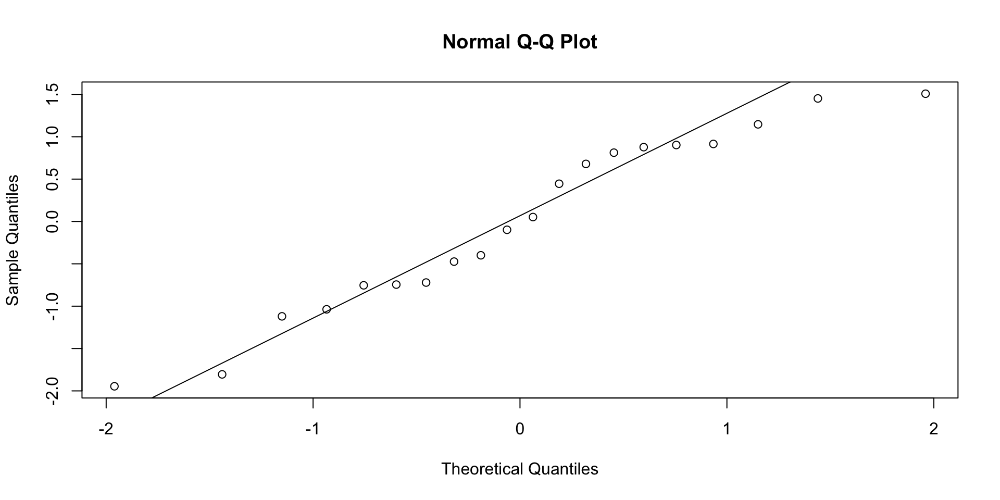
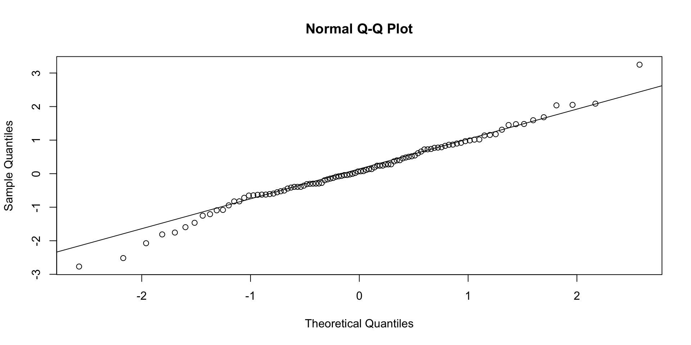
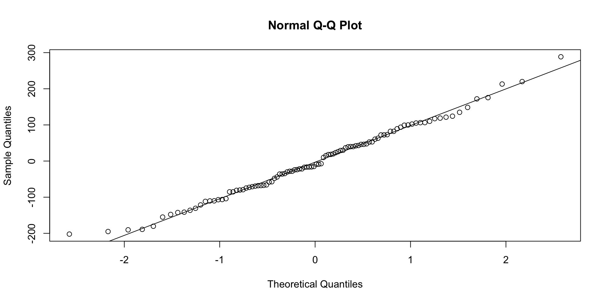
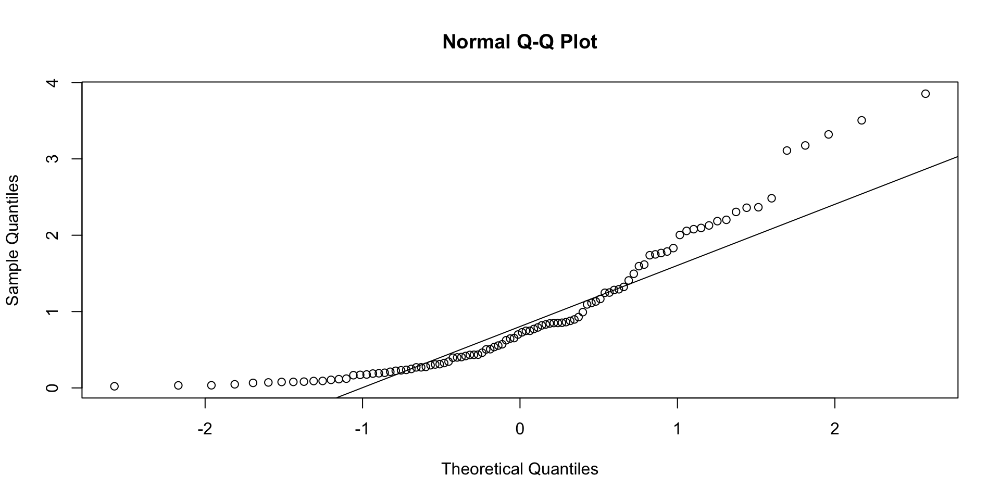
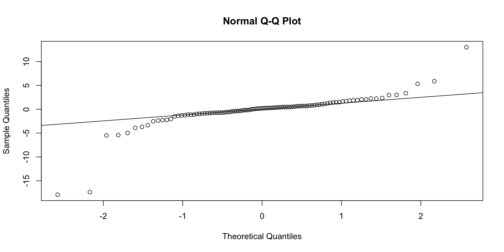

Statistics is the science of learning from data. It uses the theory of probability to make inferences about populations or processes using data
For example, we would like to know the mean of a characteristic of a set of elements of a population
But we can’t observe or measure each one because there are too many elements or not all are available.
Examples
Mean blood pressure of 40 year old pregnant females.
Mean lifetime of 60-watt bulbs being made at the G.E. plant in Cleveland.
Mean potency of an antibiotic after storage for 20 months on store shelves.
Statistics is Useful in
Data collection
Sample survey design
Experimental design
Drawing conclusion from data
Descriptive methods - summarization and presentation of data
Statistical inference - make statements about an entire population based on a sample
Population versus Sample
Since we can’t obtain the average exactly, we do the next best thing
approximate it by finding the average for a selected subset of the elements
we do a statistical study to estimate the population mean
usually, there are many objectives of a statistical study, than just estimating the mean of the population.
Steps in a Statistical Study
Collecting data - by making observations or taking measurements on some sample or process of interest, possibly as a part of a statistically designed experiment or a survey.
Summarizing the data - using statistical summary methods (calculating means or constructing a histogram, for example).
Analyzing the data and making inferences - using models and statistical methods for drawing conclusions about the situation being considered.
Terminology and definitions
Population - The set of all objects (or measurements) of interest; they are called elements of the population.
Sample - Any subset of elements from a population.
A statistical study is made using a sample obtained from a population.
Sample represents the population.
How to Select a Sample?
Theoretically we can get a random sample of \(n\) elements by
making n draws, one at a time
on each draw, each remaining element in the population is equally likely to be the one drawn.
Practically we can seldom satisfy the theoretical requirements, so we do the best we can to introduce randomness into our sample selection process.
How to Select a Sample? (continued)
Can the result of a statistical study of population mean (average) be far away from the true mean? - sure, sometimes. A statistical study provides evidence. It doesn’t prove anything
A random sample selected using the method described earlier ensures that each sample of size \(n\) drawn from a population has the same chance of being selected
Methods that ensure this property are called simple random sampling
We shall use a method for selecting a simple random sample from a population in a one of our labs using random digit tables
Some Important Definitions
Data value: measurement
Observation: Row of data values
Variable: Set of data values for the same type of measurement
Data set: The entire collection of data values
Example: Measurements on Mice
Animal id
Cage
Weight
Length
1
1
22.5
5.3
2
1
27.3
4.8
3
1
32.2
4.5
4
2
23.7
4.9
5
2
30.9
5.7
6
2
22.6
5.2
Data Description
Two broad applications of Statistics
descriptive statistics
inferential statistics
When measurements from an entire population is available to us data description will be a major objective.
In this case, methods for organizing, summarizing, and describing data are needed.
Good descriptive statistics enable us to make sense of the data by reducing large amounts of data to a few summary measures and graphical displays.
Data Description - cont.
When only a random sample is available from a large population (or a process), inferential statistics becomes the major focus.
However, even in this case, descriptive statistics of the sample data is still important as they can be used to draw conclusions about the population from which the sample was taken.
Data descriptions are of two types:
graphical methods
numerical summaries
Graphical Methods
Bar Chart
Histogram
Stem-and-Leaf plot
Time Series plot
Boxplot
Normal Probability Plot
Numerical Summaries
Measures of Center or Location
Mode
Median
Mean
Measures of Variability or Spread
Range
Percentile (Quantile, Quartile)
Interquartile Range
Variance
Standard Deviation
Coefficient of Variation
Histograms
To plot a histogram, a frequency table must first be constructed
The range of the data is divided into class intervals or bins
The number of such intervals is determined by the end-points of the intervals number of observations in the data set
The larger the number of observations the more the number of class intervals we may use
Divide the range of data values by the number of class intervals to determine an approximate class width
Weight gains of chicks fed an antibiotic - Data
An animal scientist is carrying out an experiment to investigate whether adding an antibiotic to the diet of chicks will promote growth over the standard diet without the antibiotic. The scientist determines that 100 chicks will provide sufficient information to validate the results of the experiment. From previous research studies, the average weight gain of chicks fed the standard diet over an 8-week period is 3.9 grams. The scientist wants to compare the weight gain of the chicks in the study to the standard value of 3.9 grams. The weight gains for the 100 chicks are recorded the the table shown on the next slide.
Example: Weight gains of chicks fed an antibiotic
3.7
4.2
4.4
4.4
4.3
4.2
4.4
4.8
4.9
4.4
4.2
3.8
4.2
4.4
4.6
3.9
4.1
4.5
4.8
3.9
4.7
4.2
4.2
4.8
4.5
3.6
4.1
4.3
3.9
4.2
4.0
4.2
4.0
4.5
4.4
4.1
4.0
4.0
3.8
4.6
4.9
3.8
4.3
4.3
3.9
3.8
4.7
3.9
4.0
4.2
4.3
4.7
4.1
4.0
4.6
4.4
4.6
4.4
4.9
4.4
4.0
3.9
4.5
4.3
3.8
4.1
4.3
4.2
4.5
4.4
4.2
4.7
3.8
4.5
4.0
4.2
4.1
4.0
4.7
4.1
4.7
4.1
4.8
4.1
4.3
4.7
4.2
4.1
4.4
4.8
4.1
4.9
4.3
4.4
4.4
4.3
4.6
4.5
4.6
4.0
Creating a Histogram
It was decided to have 10 class intervals
Since the range is \(4.9-3.6=1.3\), a class interval width of \(1.3/10 \approx .1\) was used
The end-points of the intervals are incremented by one-half the unit of measurement (i.e., .05 gram, here)
This is so that no observation falls on any end-point
Since the smallest observation is 3.6 we start with the interval \(3.55-3.65\)
Once the class intervals have been determined observations in the data set falling into each of these classes are tallied
# install.packages(tidyverse)library(ggplot2)ggplot(mapping =aes(x = chick)) +geom_histogram(binwidth =0.1, color ='black', fill ='#1a80bb')

Quantiles and Percentiles
The \(80^{th}\)percentile is a data value such that approximately 80% of the data values in the data set are less, and approximately 20% are larger, than that value.
For a theoretical distribution (e.g. normal distribution) the .8 quantile is a value such that 80% of the probability mass of the distribution lies to the left and 20% lies to the right of the value of the quantile.
For an empirical distribution (i.e., the distribution of a data set) we need another definition. Suppose we have 10 values in a dataset: \(52, 63, 67, 71, 75, 76, 76, 82, 87, 94\)
Quantiles and Percentiles
What is the 80th percentile? i.e., what value is such that approximately 80% are less and 20% are greater?
Since there are 10 values, need to find a number such that 8 values are less, and 2 values greater than that number.
There isn’t a value in the data set that satisfies both conditions.
A number half way between 82 and 87, i.e., 84.5, might be reasonably chosen as the \(80^{th}\) percentile.
It satisfies the definition approximately.
Quantiles and Percentiles
A definition that will give unambiguous percentiles for any set of data is needed.
Let \(p\ (0 < p < 100)\) denote the desired percentile, \(n\) the number of data values, and let \(y_{(1)}, y_{(2)}, \ldots y_{(n)}\) denote the ordered observations so that \[y_{(1)} \le y_{(2)} \le \ldots \le y_{(n)}\]
Definition: Percentiles and Quantiles
If \(p\) is one of the numbers \(100(i-.5)/n\) then \(y_{(i)}\) is the \(p^{th}\)percentile, for i = 1, 2, 3, ..., n-1 or n.
If \(p\) is between \(100(0.5/n)\) and \(100(n-.5)/n\), and \(p\) is not one of the numbers \(100(i-.5)/n\) then the percentile is obtained by linear interpolation between the two percentiles that bracket \(p\).
Quantiles are a generalization of percentiles. The \(p^{th}\) quantile of a dataset is the \(100p^{th}\) percentile.
Quantiles and Percentiles
Thus the \(p^{th}\)quantile of the dataset \(y_{(1)}, y_{(2)}, \ldots y_{(n)}\) is obtained as follows:
If \(p\) is one of the numbers \((i-.5)/n\) then \(y_{(i)}\) is the \(p^{th}\) quantile, for i = 1, 2, 3, ..., n-1 or n.
If \(p\) is between \((0.5/n)\) and \((n-.5)/n\), and \(p\) is not one of the numbers \((i-.5)/n\) then the quantile is obtained by linear interpolation between the two quantiles that bracket p.
The \(p_i^{th}\) quantile of a dataset is denoted by \(Q(p_i)\)
Quantiles and Percentiles: Example
Suppose we have a dataset consisting of the 10 observations: \(9.614, 9.614, 10.688, 7.583, 8.572, 8.527, 8.577, 9.471,
9.165, 9.011\) The following table shows the ordered data values as the specified quantiles:
\(i\)
\(p_i=(i-.5)/10\)
\(Q(p_i)\)
1
0.05
7.583
2
0.15
8.527
3
0.25
8.572
4
0.35
8.577
5
0.45
9.011
6
0.55
9.165
7
0.65
9.471
8
0.75
9.614
9
0.85
9.614
10
0.95
10.688
Quantiles by Linear Interpolation
\(Q(p)\) for values of \(p = (i-.5)/n\) correspond to the ordered observations for \(i = 1, 2, \ldots, n\). For example \(Q(.55)=9.165\).
How is, say, \(Q(.525)\) determined? This is obtained by linear interpolation between the two quantiles that bracket \(.525\) i.e, \(Q(.45)\) and \(Q(.55)\).
For a \(p\) such that \(p_i < p < p_{i+1},\ Q(p)\) is computed as the weighted average \(Q(p) = (1-f)Q(p_i) + fQ(p_{i+1})\) where \(f =(p-p_i)/(p_{i+1}-p_i) = n(p-p_i)\)
Quantiles by Linear Interpolation: Example
Suppose \(n = 10\) and one needs to compute \(Q(.525)\).
Since \(.45 < p < .55, \ f = 10 (.525 - .45) = .75\).
Thus \(Q(.525)=.25Q(.45) +
.75Q(.55)\).
In the above example, therefore \[Q(.525)= .25(9.011)+.75(9.165)=9.1265\]
Box Plots (Tukey, 1977)
The boxplot is a summary display of a set of data, that is useful for studying the shape of the distribution including its symmetry or asymmetry around the central location, based on the quantiles \(Q_1,\ M\), and \(Q_3\) as defined below:
The quantile of the standard normal distribution, \(z_p\), corresponding to each \(p\) value, is then computed using the table of Normal percentiles (i.e. the \(z\)-table).
The Normal Probability plot is the plot of the quantiles \(Q(p)\) of the data vs. \(z_p\), the corresponding standard normal quantiles.
Thus this plot is also called the quantile-quantile plot or the Q-Q plot, in general.
Normal Probability Plot: Example

Normal Probability Plot (continued)
If the data is a random sample from a normal population the plotted points will lie approximately in a straight-line.
Departures from a straight-line may indicate that the population distribution is different from a Normal distribution.
Specific types of departures can be used to identify how the population distribution differs from a Normal distribution.
The following pages contains normal probability plots of computer generated data from populations that resemble distributions that are as described.
Normal Probability Plot (continued)




Normal Probability Plot (continued)
The top set of plots are from normal populations with different mean and variance parameters
The bottom two are from populations that differ in shape from the normal distribution.
Notice that the bottom two plots show specific patterns (the left graph shows a bowl-shape while the other shows an inverted S-shaped pattern).
These are markedly different from the deviation from a straight line shown in the top graphs which are only due to random variation.
Sample Statistics vs. Parameters
A parameter is a descriptive statistic of a population.
A sample statistic is a descriptive statistic of a sample.
Take a census of a population recording values of a variable as \(x_1, x_2,\ldots,x_N\), where \(N\) is the population size, then
Population mean, \(\mu=\frac{\textstyle\sum x}{N}\)
Population variance, \(\sigma^2=\frac{\textstyle\sum (x-\mu)^2}{N}\)
Population standard deviation, \(\sigma=\sqrt{\sigma^2}\)
Sample Statistics vs. Parameters
Since censuses cannot be taken for every population we wish to study, parameters cannot be exactly calculated and thus are usually unknown.
Instead, a random sample of a population is taken recording values of a variable as \(x_1, x_2,\ldots,x_n\), where \(n\) is the sample size, then
sample mean (average, arithmetic mean), \(\bar{x}= \frac{\textstyle \sum x}{n}\)
\(\mu\), \(\sigma^2\), and \(\sigma\) are parameters.
\(\bar{x}\), \(s^2\), and \(s\) are sample statistics.
Sample Statistics vs. Parameters: Example
Calculate the sample mean, variance, and standard deviation for data: 2, 3, 3, 4, 3.
\(i\)
\(x\)
\(x^2\)
1
2
4
2
3
9
3
3
9
4
4
16
5
3
9
\(\sum x=15\)
\(\sum x^2= 47\)
Sample Statistics vs. Parameters
Compute sample variance \(s^2\) and sample standard deviation \(s\). \[\begin{eqnarray*}
s^2 & = &\frac{\textstyle\sum x^2 - \frac{(\textstyle\sum
x)^2}{n}}{n-1}=\frac{47-\frac{(15)^2}{5}}{5-1}=2/4=0.5\\[.1in]
s & = & \sqrt{(s^2)}=\sqrt{0.5}=0.71
\end{eqnarray*}\]
Summary Statistics
# Datavals <-c(2,3,3,4,3)# Meanmean(vals)
[1] 3
# Variancevar(vals)
[1] 0.5
# Standard deviationsd(vals); sqrt(var(vals))
[1] 0.7071068
[1] 0.7071068
Numerical Summary Measures
The sample mean and the sample median are examples of numerical descriptive measures of the central tendency of a sample and describes the center or location around which the data are distributed.
The sample variance and standard deviation are examples of numerical descriptive measures of the variability or the spread of the sample around the center.
These numerical descriptive measures are used both to describe a population, if the entire population of measurements is available, (e.g., census) or, to draw inferences about a population from the statistics calculated on a random sample drawn from the population.
Other Numerical Summary Measures - Median
Median: Value at which \(50\%\) of the observations are above and \(50\%\) below.
Computation of the sample median from a sample of size n:
Arrange observations in ascending order
The value of the \(\left(\frac{n+1}{2}\right)^{th}\) ordered observation is the median
What is the median of \(2,4,6,8,10\)?
median(c(2,4,6,8,10))
[1] 6
What is the median of \(2,4,6,10\)?
median(c(2,4,6,10))
[1] 5
Which measure of location should be used?
When the data are symmetric?
When data are skewed? Which means that there are some very large or very small values?
Example - Which measure of location should be used?